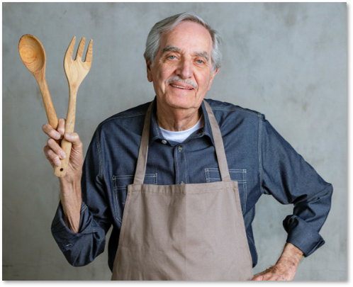

הסיפור של קרלוס

רוברטו קרלוס נולד ב-1946 בבארילוצ'ה שבארגנטינה ועלה לישראל עם אהובתו בשנת 1999.
מאז ומתמיד קרלוס מכין את האמפנדס לפי המתכון של סבתו לחברים ולבני משפחה.
מאז תחילת תקופת הקורונה, קרלוס החל למכור את האמפנדס המוכר והאהוב גם לקהל הרחב.
אז בואו נכיר את התפריט של הבית: כל האמפנדס עשויים מחומרי גלם איכותיים ובריאים,
מה שמעניק לאוכל את הטעם המיוחד של הבית הארגנטינאי האותנטי.
באתר תוכלו לבחור אפמנדס במגוון מילויים- בשרי, חלבי, טבעוני ואפילו מתוק!